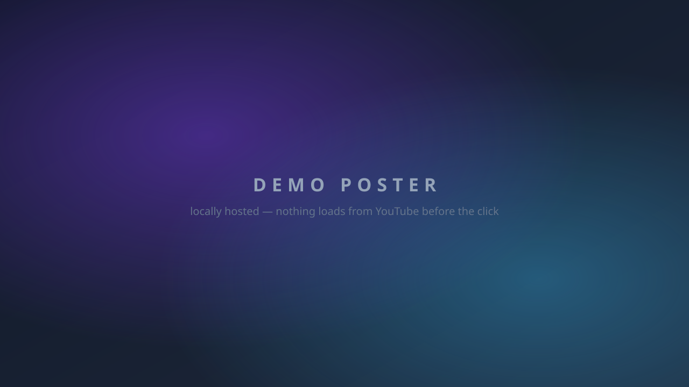

video
CMS-maintainable video embeds: self-hosted with responsive sources and art direction, or YouTube behind a GDPR-friendly click-to-load facade.
Resize the window (or rotate your device) to watch
the source switching: the DevTools network panel shows which
rendition loads, and in example 3 the footage itself changes
shape. Playback position survives every switch. With
prefers-reduced-motion: reduce the ambient loop in
example 2 starts paused.
1 — Click to play, resolution ladder
One footage, five renditions from 640 px to 4K: picked by
viewport width and pixel density
(min-resolution: 2dppx), first match wins, the
attribute-less source is the fallback. The centered play button
hands over to the native controls; pausing brings it back.
2 — Ambient loop (autoplay, muted)
autoplay muted loop playsinline on the
<video>: it runs natively, the script only adds
the persistent corner toggle (WCAG 2.2.2). Under
prefers-reduced-motion: reduce it does not start —
the toggle is the explicit opt-in.
3 — Art direction (portrait ↔ landscape)
Below 768 px the container is 9:16 and a portrait rendition
(c_fill crop of the same footage) loads; from
768 px up both switch to 16:9. Start the video, then resize
across the breakpoint: the source swaps and the playback position
carries over.
4 — YouTube facade (click to load)
A locally hosted poster and a play button — check the network
panel: nothing is requested from Google until you click. The
click builds the youtube-nocookie.com iframe with
autoplay; without JavaScript the link opens the video on
YouTube. The CMS field accepts the full URL or the bare id.

Watch on YouTube